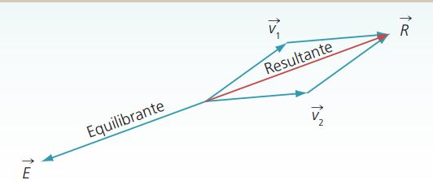
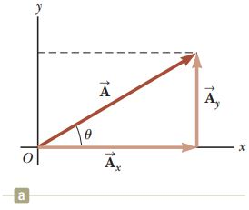
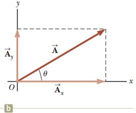

Conceptos generales
Cinemática
Dinámica
Electrostática
Electrodinámica
VectoresUna cantidad escalar se especifica por completo mediante un numero y una unidad adecuada y no tiene dirección. Algunos ejemplos de cantidades escalares son volumen, masa, rapidez e intervalos de tiempo.
Una cantidad vectorial se especifica por completo mediante un número, unidades apropiadas (la magnitud del vector) más una dirección. Algunos ejemplos de cantidades vectoriales son el desplazamiento, la velocidad y la fuerza.
Características de un vectorSe usa una letra con una flecha sobre ella, como \(\vec{A} \), para representar un vector.
La magnitud de un vector siempre es un número positivo.
Las cantidades vectoriales se representan gráficamente por medio de líneas rectas con una punta de flecha en un extremo.
Un vector cualquiera tiene las siguientes características:
1. Punto de aplicación u origen.
2. Magnitud, intensidad o módulo del vector. Indica su valor y se representa por la longitud del vector de acuerdo con una escala convencional.
3. Dirección. Señala la línea sobre la cual actúa, puede ser horizontal, vertical u oblicua, y es el ángulo que forma la línea de acción del vector con respecto al eje x positivo.
4. Sentido. Queda señalado por la punta de la flecha e indica hacia dónde actúa el vector. El sentido de éste se puede identificar de manera convencional con signos (+) o (-).
Resultante y equilibrante de un sistema de vectores
La resultante de un sistema de vectores es el vector que produce, él solo, el mismo efecto que los demás vectores del sistema. Por ello, un vector resultante es aquel capaz de sustituir un sistema de vectores.
La equilibrante de un sistema de vectores es el vector que es capaz de cancelar el vector resultante de un sistema de vectores. Por tanto, tiene la misma magnitud y dirección que la resultante, pero con sentido contrario.

Suma de vectores
La suma de vectores no se realiza como la suma escalar, en la suma escalar solo se tiene que sumar los valores numéricos, en tanto que la suma de vectores se lleva a cabo sumando los componentes de dichos vectores.
A continuación se describe el método de suma de vectores que utiliza las proyecciones de los vectores a lo largo de los ejes coordenados. Dichas proyecciones se llaman componentes del vector o componentes rectangulares.
Considere un vector \(\vec{A}\) que se encuentra en el plano y forma un ángulo arbitrario θ con el eje positivo x. Este vector se puede expresar como la suma de otros dos vectores componentes, Ax que es paralelo al eje x, y Ay, que es paralelo al eje y.

La segunda figura muestra el vector componente Ay desplazado a la izquierda de tal modo que se encuentra a lo largo del eje y. Vemos que el componente Ax representa la proyección de \(\vec{A}\) a lo largo del eje x, y la componente Ay representa la proyección de \(\vec{A}\) a lo largo del eje y. Estas componentes pueden ser positivas o negativas. La componente Ax es positiva si el vector componente Ax apunta en la dirección x positiva y es negativa si Ax apunta en la dirección x negativa. Lo mismo es cierto para la componente Ay.
De la segunda figura y de la definición de seno y coseno, es claro que cos(θ) = Ax / A y que sen(θ) = Ay / A. Por tanto, las componentes de \(\vec{A}\) son
\( \vec{A}_{x}=\vec{A}\cdot cos\left(\theta \right) \)
\( \vec{A}_{y}=\vec{A}\cdot sen\left(\theta \right) \)
Donde el ángulo θ es el ángulo formado por el eje x positivo y el vector, en sentido antihorario.
Las magnitudes de estas componentes son las longitudes de los dos lados de un triángulo rectángulo con una hipotenusa de longitud A. Debido a esto, la magnitud y la dirección de \(\vec{A}\) se relacionan con sus componentes mediante las expresiones
\(\displaystyle \vec{A}=\sqrt{{\left({\vec{A}}_{x}\right)}^{2}+{\left({\vec{A}}_{y}\right)}^{2}} \)
\(\displaystyle \theta ={\tan}^{-1}\left(\frac{{\vec{A}}_{y}}{{\vec{A}}_{x}}\right) \)
Ejercicio. Una excursionista comienza un viaje al caminar primero 25.0 km hacia el sureste desde su vehículo. Se detiene y levanta su tienda para pasar la noche. En el segundo día, camina 40.0 km en una dirección 60.0° al noreste, punto en el que descubre una torre de guardabosque. Determine el vector resultante de sumar ambos deplasamientos.
El desplazamiento \(\vec{A}\) tiene una magnitud de 25.0 km y se dirige 45.0° abajo del eje x positivo
Encontramos las componentes del vector \(\vec{A}\)
\(\displaystyle \vec{A}_{x}=\vec{A}\cdot cos\left(\theta \right) \)
\(\displaystyle \vec{A}_{x}=\left(25.0\,km \right)\cdot cos\left(45° \right) =17.7\,km\)
\(\displaystyle \vec{A}_{y}=\vec{A}\cdot sen\left(\theta \right) \)
\(\displaystyle \vec{A}_{y}=\left(25.0\,km \right)\cdot sen\left(45° \right)=-17.7\,km \)
Encontramos las componentes del vector \(\vec{B}\)
\(\displaystyle \vec{B}_{x}=\vec{B}\cdot cos\left(\theta \right) \)
\(\displaystyle \vec{B}_{x}=\left(40.0\,km \right)\cdot cos\left(60° \right) =20.0\,km\)
\(\displaystyle \vec{B}_{y}=\vec{B}\cdot sen\left(\theta \right) \)
\(\displaystyle \vec{B}_{y}=\left(40.0\,km \right)\cdot sen\left(60° \right)=34.6\,km \)
Ahora sumamos las componentes
\(\displaystyle \vec{R}_{x}=\vec{A}_{x}+\vec{B}_{x} \)
\(\displaystyle \vec{R}_{x}=17.7\,km+20.0\,km=37.7\,km \)
\(\displaystyle \vec{R}_{y}=\vec{A}_{y}+\vec{B}_{y} \)
\(\displaystyle \vec{R}_{y}=17.7\,km+34.6\,km=52.3\,km \)
Ahora obtenemos el vector resultante
\(\displaystyle \vec{R}=\sqrt{{\left({\vec{R}}_{x}\right)}^{2}+{\left({\vec{R}}_{y}\right)}^{2}} \)
\(\displaystyle \vec{R}=\sqrt{{\left(37.7\right)}^{2}+{\left(52.3\right)}^{2}}=64.47\,km \)
Finamente calculamos el ángulo de dicho vector resultante.
\(\displaystyle \theta ={\tan}^{-1}\left(\frac{{\vec{R}}_{y}}{{\vec{R}}_{x}}\right) \)
\(\displaystyle \theta ={\tan}^{-1}\left(\frac{52.3}{37.7}\right) =54.21°\)
Haz click en el siguiente enlace para ver tutoriales relacionados con el tema.